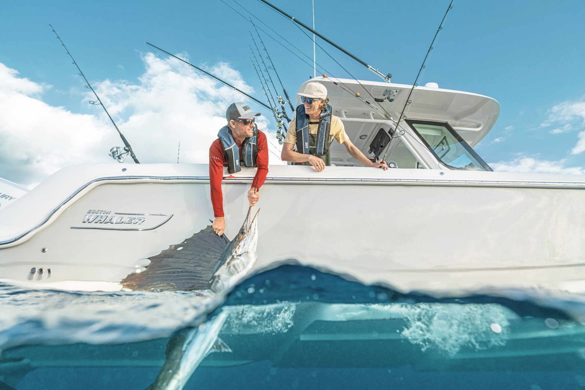
Boston Whaler — Brand Evolution & Launch Work
01Early brand-refresh exploration followed by independently led launch creative for the 330 and 290 Outrage.
A multidisciplinary designer working across brand strategy, campaign systems, digital marketing and visual experience design for marine and lifestyle brands.

Early brand-refresh exploration followed by independently led launch creative for the 330 and 290 Outrage.

A full-funnel product launch system positioning the SLX 360 Outboard as a confident expression of modern luxury across social, email and web.

Three separate lash-packaging explorations, shown together to compare hierarchy, colour coding and shelf presence. Each exploration was designed independently — not as a single SKU family.

A restrained luxury identity for an independent hair salon. The system uses refined typography, a controlled neutral palette and editorial composition to communicate confidence and craft without relying on conventional beauty-industry ornament.

Turning a forgettable two-letter product name into a flexible lifestyle narrative built around summer, access and belonging.

Repositioning a utility hunting boat through a modern campaign system rooted in trust, authenticity and the hunting mindset.

A tactile identity system built around collectible embroidered patches. The work balances a utilitarian visual language with playful object-based storytelling, allowing the brand to live consistently across physical merchandise, labels and graphic applications.

A warm, contemporary café identity informed by Korean visual culture and the intimacy of a neighborhood gathering place. The system combines a flexible wordmark, friendly graphic devices and tactile applications across signage, packaging and motion.

A personal illustration series exploring character, atmosphere and visual storytelling. The work uses simplified form, deliberate color relationships and editorial framing to turn everyday school moments into expressive narrative scenes.

A senior capstone UI/UX project exploring how a clearer mobile transit experience could reduce uncertainty around bus arrival and trip planning.
Selected photography.
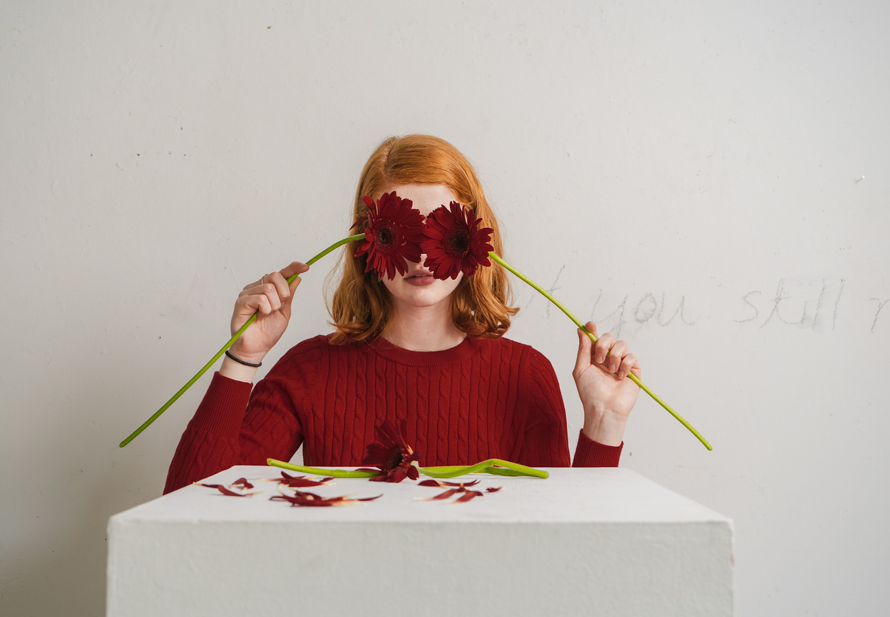
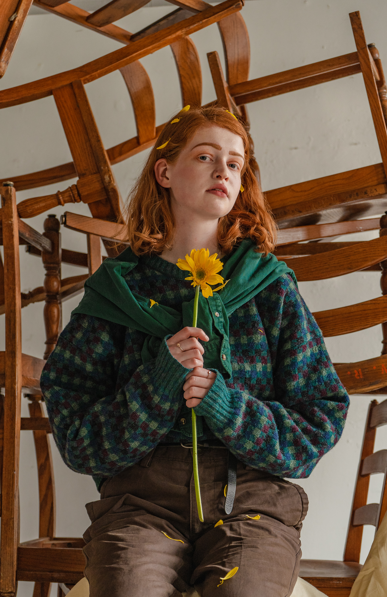
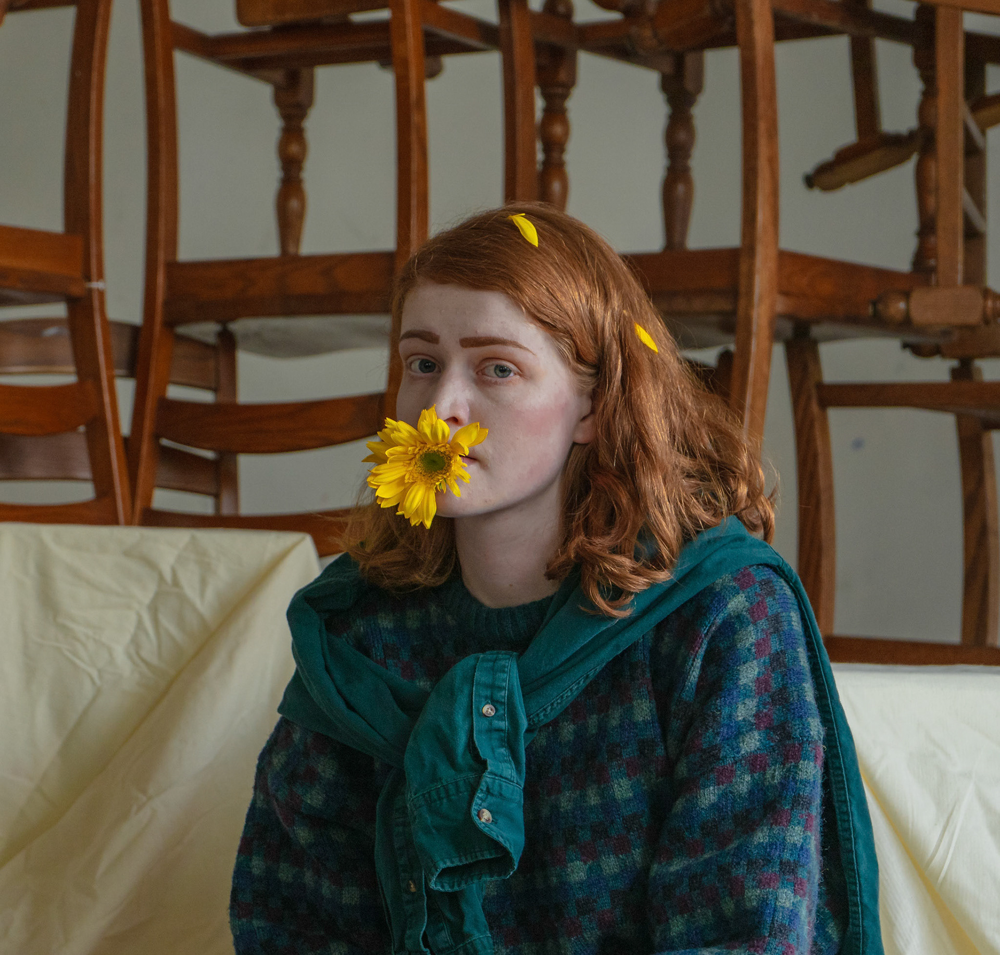
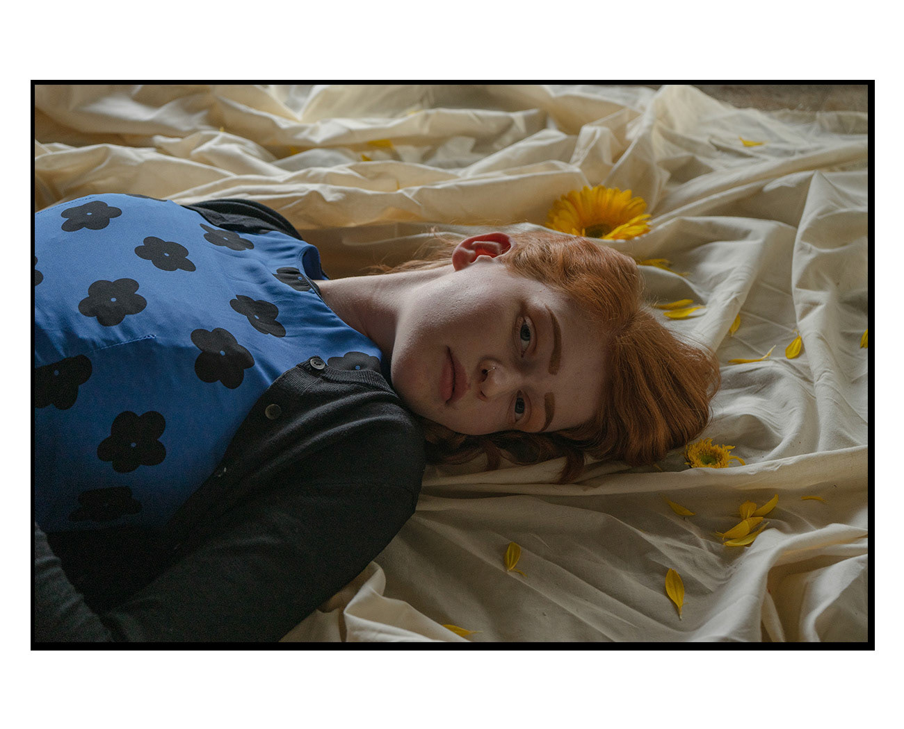
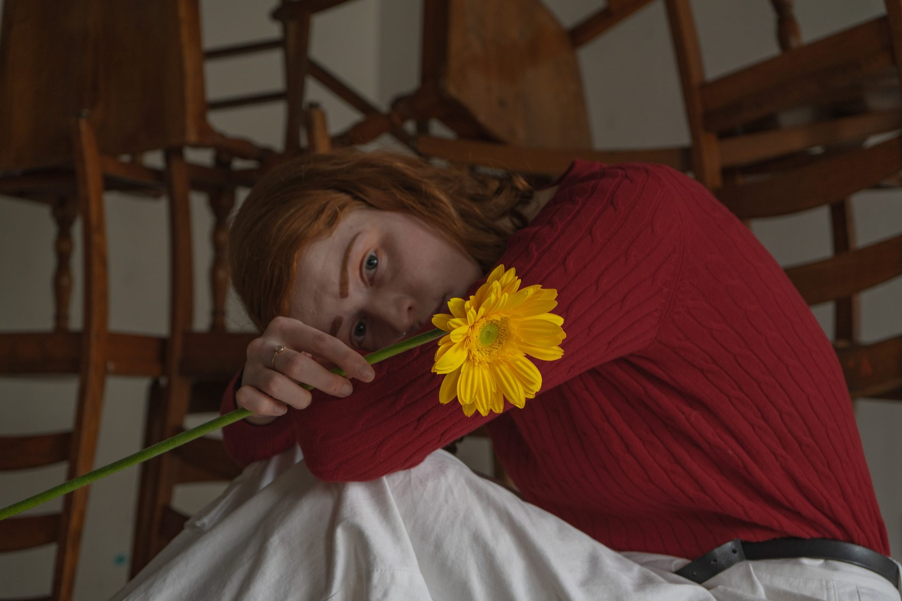
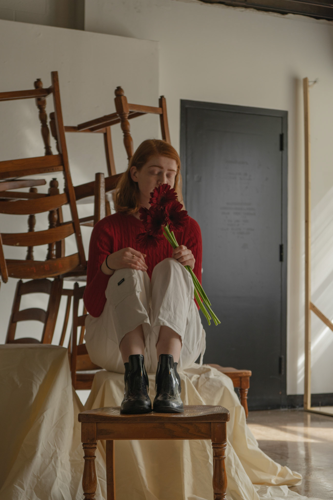
Open to read more about my background, approach and experience.
I’m a multidisciplinary designer currently working at Brunswick Corporation, where I create launch campaigns, digital experiences and brand communications across marine brands including Sea Ray, Boston Whaler, Harris, Lowe and Lund.
My practice is grounded in storytelling, visual systems and brand experience. I’m especially interested in how strategy, emotion and clear communication can shape more memorable creative work across campaigns and customer touchpoints.
This portfolio includes professional work alongside selected independent and academic projects.
An integrated launch campaign for the all-new Sea Ray SLX 360 Outboard, translated into a disciplined visual system across social, email and web.
The SLX 360 Outboard launch needed to communicate performance, comfort and design in a voice that felt unmistakably Sea Ray. The campaign had to remain elevated while adapting across formats with very different content demands.
Black editorial fields, precise typography and cinematic boating photography create a premium framework. Benefit-led messages such as “Power can have pulse” and “Comfort can be commanding” transform product attributes into concise emotional statements.


Each touchpoint uses the same core ingredients with a channel-specific hierarchy. Social emphasizes pacing and discovery, Stories deliver immediate benefit-led messages, email supports deeper consideration and the web hero establishes the launch at a glance.
A product launch and campaign system designed to modernize Lowe Roughneck without losing the credibility it had earned with hunters and anglers.
Lowe had built a strong reputation around reliable, affordable aluminum boats. Yet the existing creative direction felt dated and increasingly disconnected from younger, lifestyle-driven hunters. The opportunity was not to make the brand louder, but to make it feel more relevant and emotionally credible.
Hunters don’t just buy boats. They buy trust.
Competitive analysis showed a category crowded with toughness, tradition and feature claims. Lowe could differentiate by demonstrating that the brand understood the hunter’s mindset, environment and need for equipment that feels dependable rather than performative.
The campaign concept, “Hidden in Plain Sight,” drew from the new Mossy Oak camouflage patterns and reframed camouflage as a symbol of intelligence, precision and belonging. The visual system paired organic camouflage fields with disciplined typography and direct messaging.
I reviewed the visual conventions, messaging patterns and positioning used across competing aluminum hunting and fishing brands. The analysis revealed a category dominated by toughness claims, heritage cues and functional feature language, creating an opportunity for Lowe to feel more contemporary without losing credibility.

The mood board established the campaign’s tone before execution: swamp-inspired color, environmental texture, camouflage integration, restrained typography and imagery that felt authentic to the hunting experience rather than staged.


The campaign elevated Lowe’s visual perception while retaining its affordability and authenticity. “Hidden in Plain Sight” also established a reusable creative theme for future hunting-focused communication within the Lowe brand family.
Transforming LS from a forgettable alphanumeric product name into an emotionally flexible lifestyle platform.

The value pontoon category was dominated by either dry specification-led messaging or aspirational luxury. LS had the chance to occupy the space between them: stylish, social and attainable. The problem was that the name itself carried no emotional meaning.
People weren’t asking for another pontoon name. They wanted more reasons to get on the water.
For first-time boaters, boating can feel financially and culturally out of reach. The campaign needed to lower that barrier without diminishing the quality or appeal of the product.
Instead of avoiding the plainness of the name, the concept turned it into a flexible storytelling device:
This system gave the campaign a recognizable structure while allowing each execution to express a different emotional facet of the product.
I developed the photoshoot mood board to establish the lighting, emotional tone, casting moments and product-detail priorities for the LS launch. It became the shared visual reference used to align the production team before the shoot.
The final photography closely followed this direction: warm golden-hour light, natural family and friend interactions, active boating moments and product features captured within real use.
.png)
I developed the launch-video storyboard to translate the LS campaign idea into a clear filming plan. The sequence moves from warm product introductions and lifestyle moments to feature details, social energy and a final full-boat reveal. Each frame identifies the intended camera perspective, narrative purpose and primary visual focus so the production team could capture a cohesive story rather than disconnected footage.


The final video carries the storyboard’s visual rhythm into motion—balancing product detail, social energy and warm lifestyle moments to introduce the LS Pontoon as an attainable but elevated boating experience.
The LS narrative system was translated into a flexible set of campaign executions across static, digital and motion formats. Each piece uses the same core visual language while adapting hierarchy, pacing and messaging to the needs of the channel.


The photoshoot direction emphasized warm natural light, candid interactions and motion. The goal was to show families and friends sharing believable moments, giving the LS story a human center rather than treating the boat as an isolated product object.
A tactile identity system built around collectible embroidered patches. The work balances a utilitarian visual language with playful object-based storytelling, allowing the brand to live consistently across physical merchandise, labels and graphic applications.
Collectible embroidered patches need a system that feels both utilitarian and playful. A patch has to earn its place — it must read as an object worth keeping, not as merch added as an afterthought. That set the bar for the identity: it had to behave like an object, not a logo on a poster.
Collectors keep what means something. Each patch works when the object it pictures is instantly recognisable and the story behind it is clear — so the patch itself is the product, and the identity should behave like an object, not a logo on a poster.


A single grid, type treatment and material language carries every patch. Labels, merchandise and graphics share the same grid and color discipline, so a new object slots into the series without a redesign — a new patch can join without breaking the family.
New objects can join the series and still read as part of one family. The next patch does not need a new identity, just a place in the one that already exists.
A restrained luxury identity for an independent hair salon. The system uses refined typography, a controlled neutral palette and editorial composition to communicate confidence and craft without relying on conventional beauty-industry ornament.
An independent salon needs to feel premium without leaning on conventional beauty-industry decoration.
Wide tracking, generous space and a controlled neutral palette say more about craft than ornament does.


Restraint is the luxury signal. A geometric monogram that holds on glass, card and fabric. A wide-tracked serif wordmark — calm, not decorative. Black, white, warm beige, grey. No pink, no script, no flower, no sparkle.
The system works where the brand is met. Etched into the salon window. Quiet and tactile on the card. Worn on the apron — the staff are the brand in use.
A refined serif wordmark, a geometric monogram, neutral tones and editorial composition, applied to signage, stationery and the salon apron.
The same restraint carries from the shopfront to a business card, so the brand feels considered wherever a client meets it.
A warm, contemporary café identity informed by Korean visual culture and the intimacy of a neighborhood gathering place. The system combines a flexible wordmark, friendly graphic devices and tactile applications across signage, packaging and motion.
A café informed by Korean visual culture needs warmth and personality without tipping into cliché. Intimacy is the product — a gathering place, not a destination — so the identity had to feel hand-made at small scale and still coherent at large scale.
The identity has to feel like a gathering place — familiar, friendly and easy to recognise.


One wordmark, a small set of graphic devices and tactile applications across signage, packaging and motion — chosen so the brand feels hand-made at small scale and still coherent at large scale.
The same warmth reads on a sign, a cup and a moving frame.
A personal illustration series exploring character, atmosphere and visual storytelling. The work uses simplified form, deliberate color relationships and editorial framing to turn everyday school moments into expressive narrative scenes.
School days are small scenes. The work had to make them feel narrative, not decorative.
Simplified form and deliberate colour relationships carry character and atmosphere further than realism. Character and atmosphere matter more than detail.


A consistent approach to form, palette and editorial framing holds the series together across scenes, so each scene reads as a small narrative, not a portrait.
Each scene stands alone, but together they feel like the same place.
A precise, technical identity for a dental laboratory. The visual system translates accuracy, material expertise and clinical reliability into a clean brand language that can function across professional communication and operational touchpoints.
A dental laboratory’s brand has to communicate accuracy and clinical reliability at a glance.
Clean structure, restrained type and a precise visual language do the persuading. The system is designed to be trusted because it is consistent, not because it is loud.


A clean system built from exact alignment, controlled typography and a restrained palette, applied across professional communication and operational touchpoints.
The same clarity works on a client-facing document and on day-to-day lab materials.
Three separate lash-packaging explorations — a magnetic lash box, a strip-lash adhesive and a lash-glue tube — shown together to compare hierarchy, colour coding and shelf presence. Each was designed independently, not as a single SKU family.
Three lash products, three buying fears — glue, complexity, trust. I tested what each one needed to say first, instead of forcing them into one family.
I owned hierarchy, colour coding and typography across all three explorations — and kept them separate, so the learning stayed legible.


The system is built on one rule: the buying fear gets the largest voice, the product type gets the second, and the proof gets the smallest, most specific line.
One rule throughout: colour and name at three feet, benefit at arm’s length, proof in the hand.
Comparability was the point. Each direction’s trade-off is explicit — premium and reassurance, clarity and speed, standout — so choosing one to build a real SKU family from is a decision, not a guess.
A multi-phase case study spanning research and early visual exploration, followed by independently led launch creative for the 330 Outrage and 290 Outrage.
I contributed heavily to the audit, competitive benchmarking and initial visual directions alongside the creative team.
Another designer on our team led the later development of the refreshed system. I was not involved in the final guideline production.
After the guidelines were completed, I independently carried the 330 Outrage and 290 Outrage launch creative.
The project began because both the client and creative team felt increasingly constrained by an aging visual system. The ask was evolutionary—not a dramatic reinvention: preserve the equity of an established premium brand while making its marketing feel more contemporary, refined and flexible.
Recent work lacked a clear hierarchy and repeatable graphic behavior across channels.
The marketing did not consistently reflect the product quality, reputation or price point.
Competitors often relied on familiar blue-water imagery, making distinctiveness difficult.
The Boston Whaler name, red accent and iconic W carried meaningful recognition and trust.
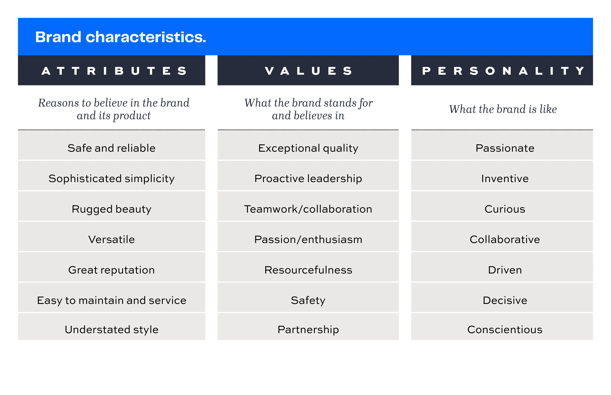
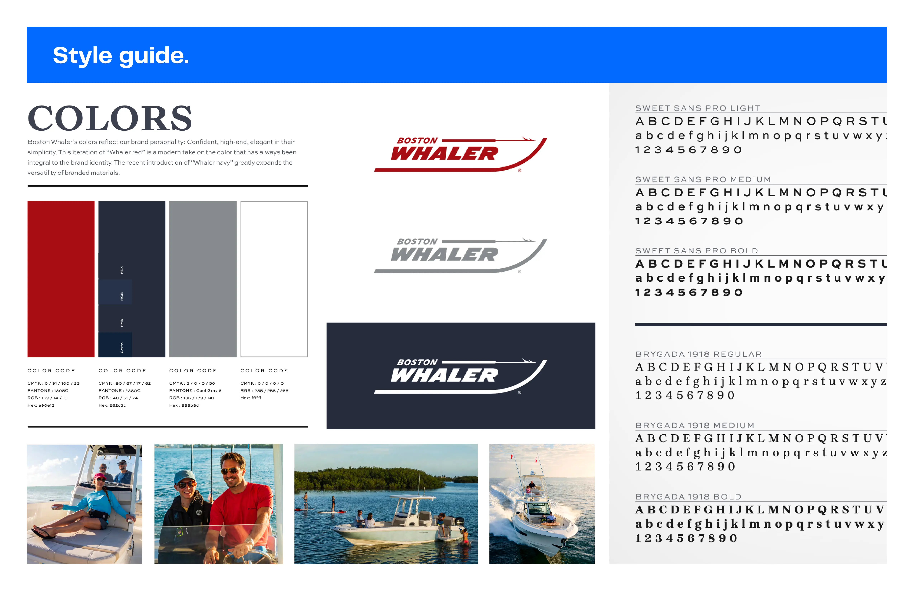
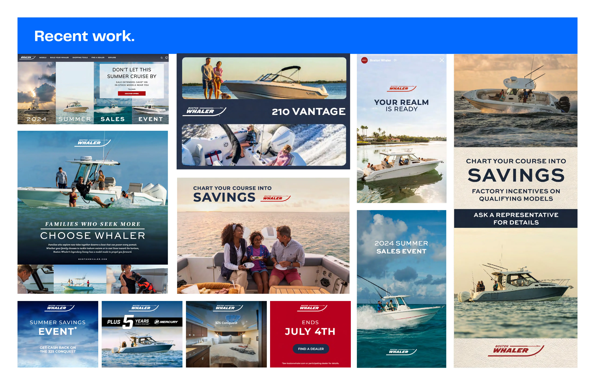
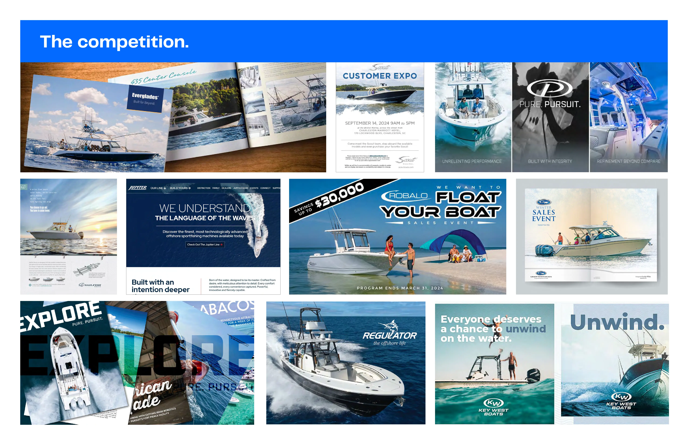
Refine rather than replace. Strengthen hierarchy, modernize the palette, establish more flexible graphic treatments and use the W mark as a more prominent, ownable brand asset.
Four designers explored distinct expressions of the same strategic brief. The concepts are shown at equal scale because the value of this phase came from comparison: each direction tested a different balance of heritage, confidence, warmth and modernity.
The final guidelines are included as project context—not presented as my individual work. They created the foundation I later used to develop the 330 and 290 Outrage launch systems.
Open official guidelines PDF ↗This is where my role shifted from contributor to owner. I independently translated the completed brand framework into a launch system balancing capability, premium detail and an editorial product story.
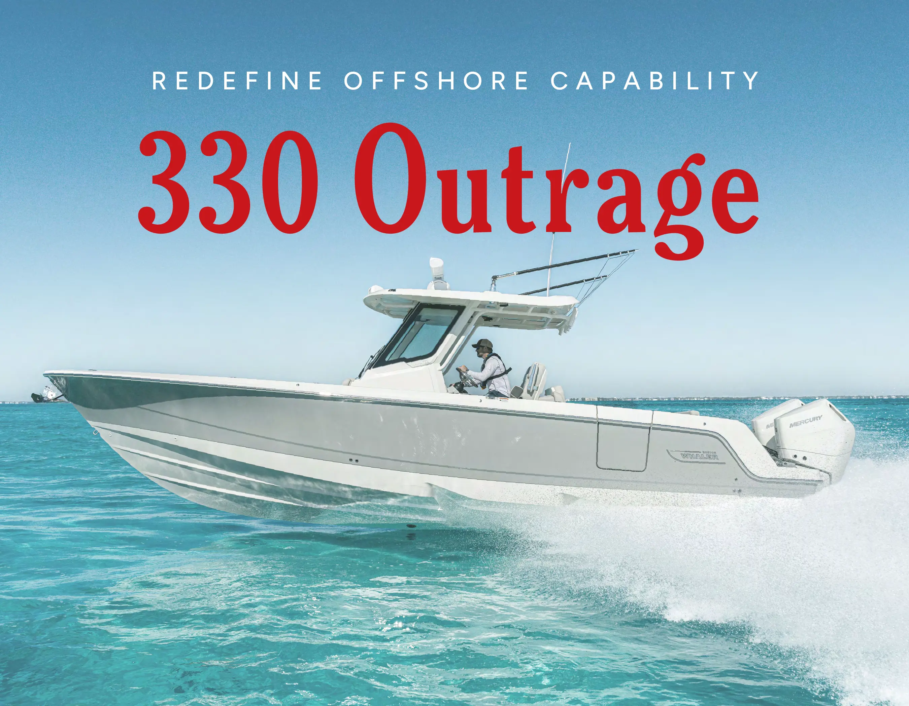
Product performance remains central, supported by confident pacing and restrained editorial composition.
Large moments establish emotion while tighter modules reveal features, craftsmanship and utility.
The framework flexes across spreads while retaining recognizable rhythm, typography and image behavior.
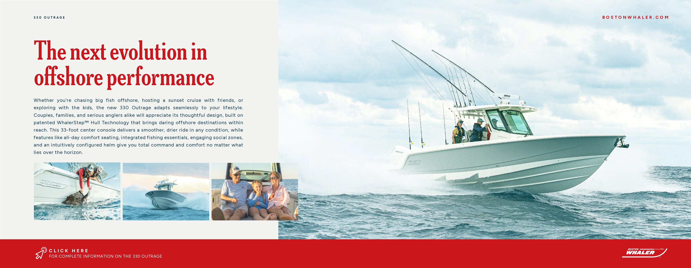
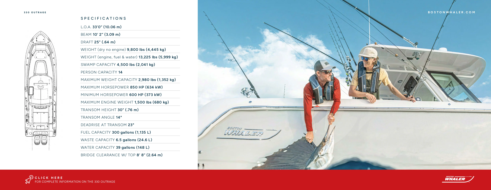
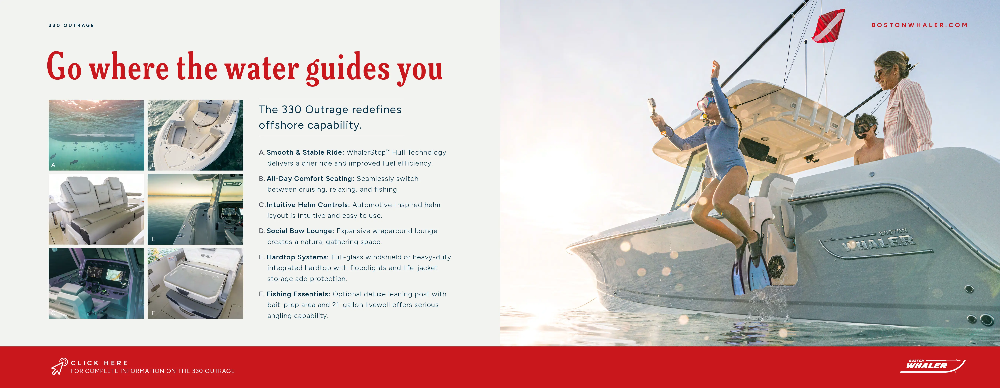
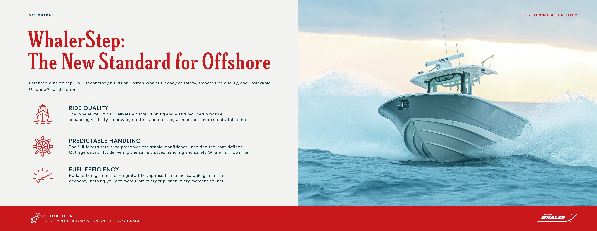
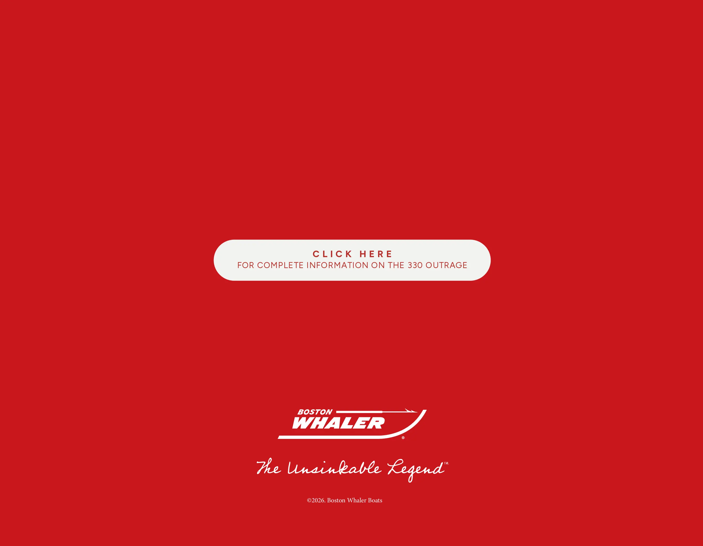
The launch film, the hull technology story and the product walkthrough. One type system across all three so they read as a set in the sidebar, with different imagery so they stay distinguishable at thumbnail size.
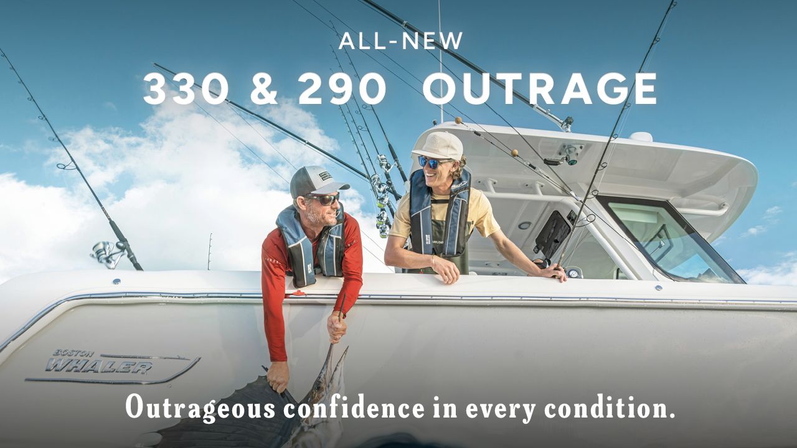
▶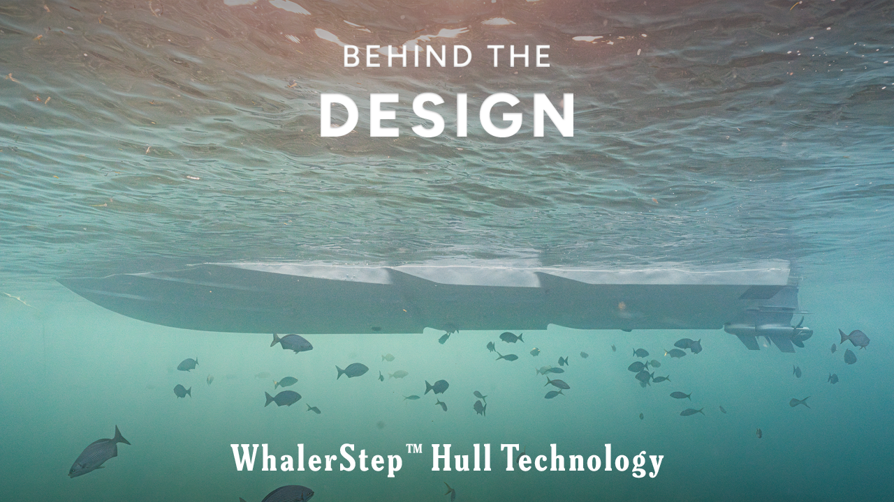
▶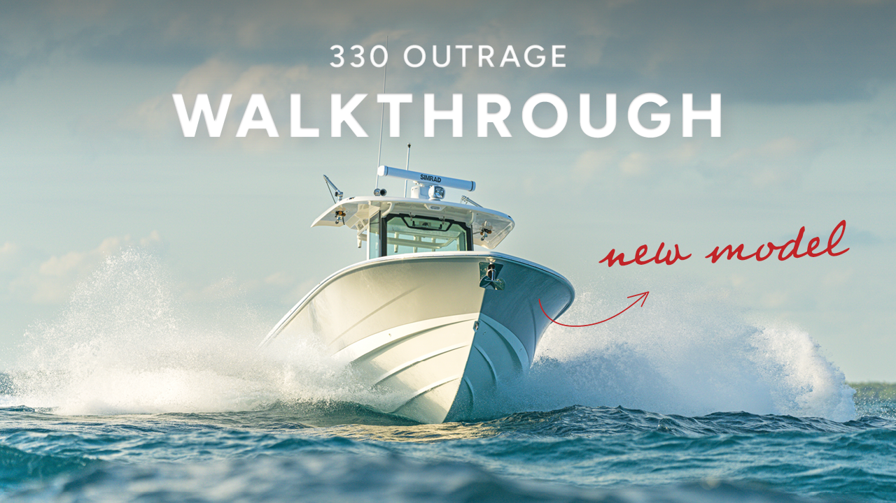
▶Three owner films covering family boating, offshore confidence and introducing kids to the water. Same palette as the launch films at a lighter type weight, so they sit as supporting content rather than competing with the main series.
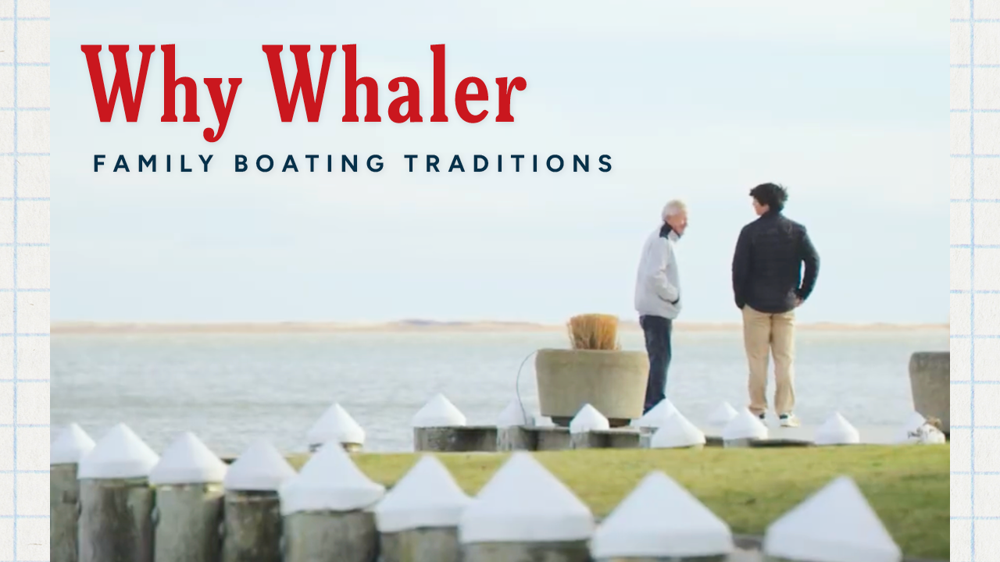
▶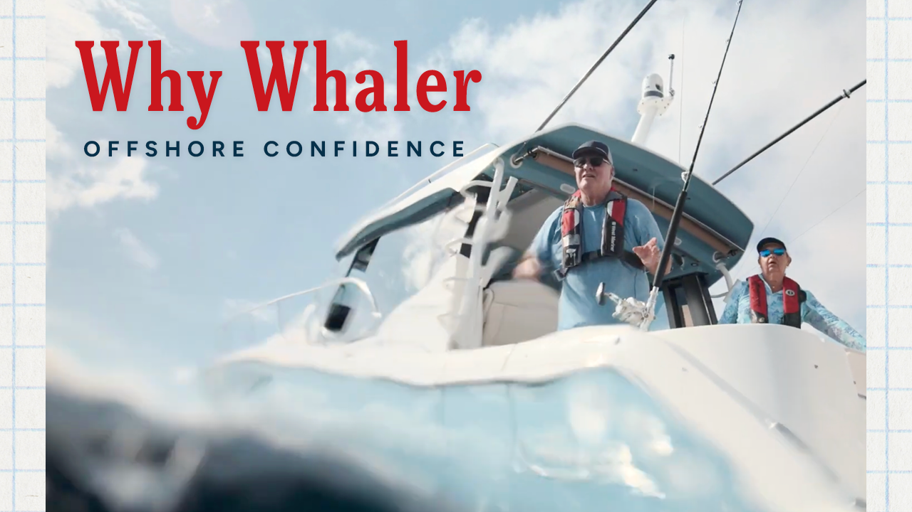
▶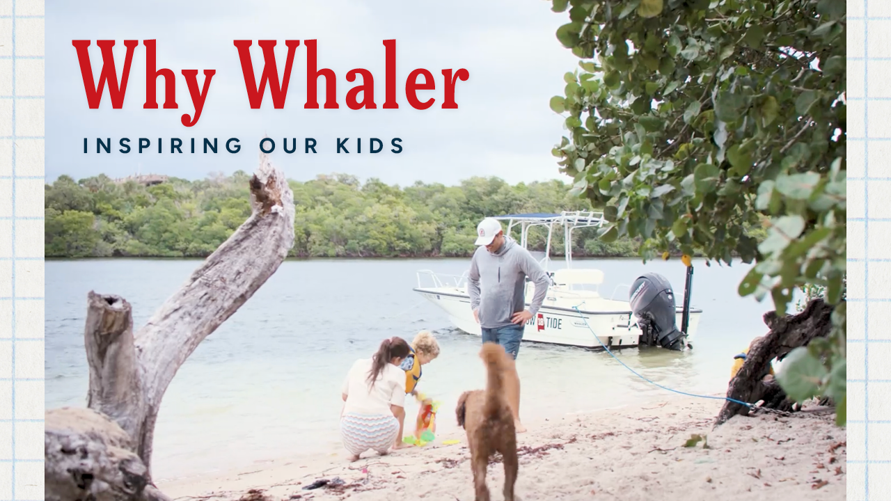
▶Cover design for both books, using the launch typography, the warm neutral field and the red gesture. A manual is the piece an owner keeps for years, so it was worth bringing into the refreshed system rather than leaving on the old one.
A restrained, durable extension of the launch system.
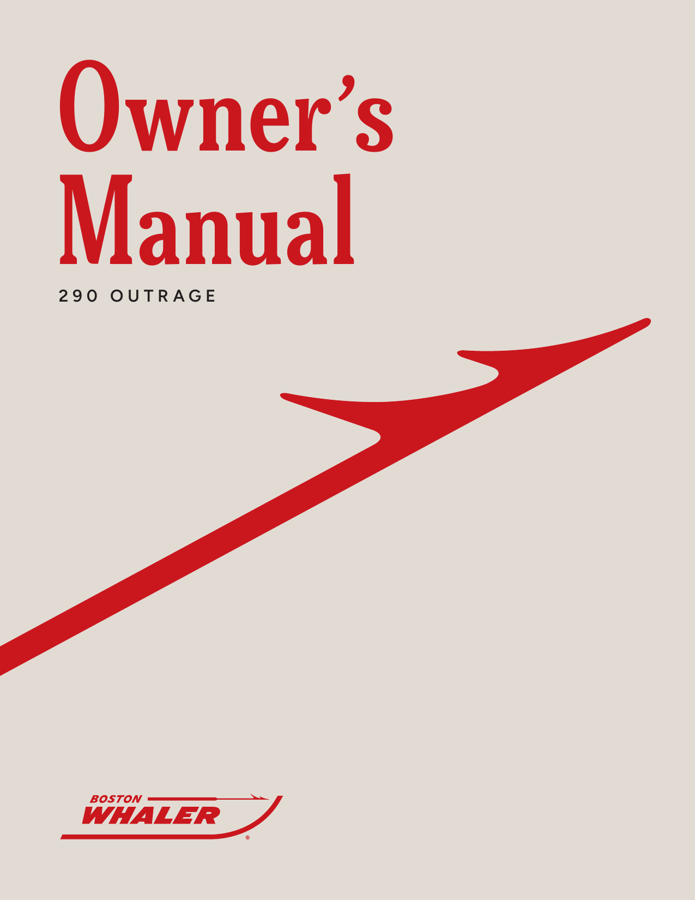
The same visual discipline translated to the second launch.
Following the 330 Outrage, I independently led the 290 Outrage launch creative and translated the refreshed brand into a focused campaign system across paid social, YouTube and print.
The challenge was not simply producing more formats. Each touchpoint needed to feel native to its channel while preserving one recognizable product story.
The rollout balanced high-impact product storytelling across mobile, video and print touchpoints while preserving one recognizable product narrative.
The 290 story split across two shorter series instead of one long carousel, so the campaign had two openings rather than one. Same grid and type scale in both; the difference is which benefit leads.
Use the arrows, swipe, or drag to explore each carousel.
Designed at the size they appear in a YouTube sidebar rather than scaled down from a larger composition. The launch film leads with the boat in motion, the walkthrough with a legible label.
A single printed sheet for dealer counters and events. Boat, headline, the specs buyers ask about, and where to go next, in that order.
Editorial scale, clear feature hierarchy and a premium image-led rhythm give the piece presence without overwhelming the product.
A downloadable shopping guide for people at the start of the buying process. Paid social in two carousel series and two animated units, each delivered in a feed and a story ratio.
There is no hero product to lead with, so the creative opens on the buyer’s question instead of a hull. Each unit asks what kind of boating someone does, then points to the guide as the way to narrow it down.
Five frames in the first series, four in the second. Both run the same sequence: a question, a short decision framework, then the download. Every frame was composed separately in each ratio rather than cropped.
“What kind of boater are you?”
“What type of boater are you?”
A two-second loop cycling the guide cover through the brand’s three colour fields, and a fifteen-second film built from owner photography. Both end on the same download.
Cover loop
Lifestyle film
The same typography, palette and red gesture as the launch work, applied to an offer rather than a boat.
The refreshed identity made its first public appearance at the Miami International Boat Show. These show-floor assets were a collaborative production effort rather than individually designed by me.
I provided design reference and context from the refreshed brand system, while production artists on the production team adapted and executed the final large-format applications. The work is included as supporting context to show how the identity extended into its first public reveal.
The show graphics carried the refreshed typography, palette and image behavior across legacy storytelling, new-product promotion, owner engagement and entry-level boating.
The early phase taught me how to evaluate an established brand without defaulting to novelty. The work required identifying what had become limiting while respecting the recognition and trust already built.
The 330 and 290 launches then tested whether that strategy could function under real production demands. Those launches are the clearest expression of my contribution: taking a shared framework and turning it into complete, product-specific creative systems.
An academic UI/UX exploration focused on making everyday bus travel feel easier to understand, anticipate and navigate.
Time to Bus was created during my senior year as a university capstone project. It represents an early exploration of product thinking—moving beyond visual communication to consider user needs, task flow, information hierarchy and interaction.
Bus riders often have to interpret schedules, arrival information, routes and walking time while already under pressure. The concept explored how a mobile experience could present the most important information first and help riders make faster, more confident decisions.
The project considered the journey from finding a nearby stop to understanding the next arrival and preparing to leave. The interface direction prioritized clear timing, recognizable routes and a focused hierarchy rather than exposing every transit detail at once.
Define the commuter problem and the moments of uncertainty.
Map information and prioritize the actions needed during a trip.
Develop user flows and early interface directions.
Translate the system into a consistent mobile UI concept.
Original images from the 2020 senior capstone project, shown in presentation order.


The visual language reflects the period in which it was created, but the project remains important as my first structured attempt to connect research, navigation and interface design. In a future iteration, I would validate the core flow with current riders, account for accessibility and service disruptions, and rebuild the interface using a contemporary component system.